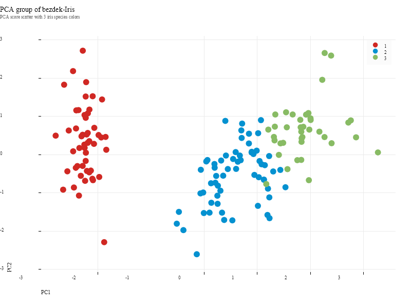

sciBASIC#
↖
sciBASIC#
↖
01 Tutorial — K-means + PCA
Cluster the Iris dataset with k-means, then unfold it onto a 2-D PCA scatter.
A complete unsupervised-learning pass over the classic Bezdek Iris table — 150 specimens, four morphological measurements, three hidden species — driven by a short VBScript run on the sciBASIC# script engine. The script loads the table with the DataFrame resolver, partitions it into k = 3 clusters, projects the four-dimensional points onto the first two principal components, renders an 800 × 600 Nature-themed scatter, and exports the fully annotated table as CSV.
02 Pipeline
Five statements, end to end
Load
DataFrameResolver.LoadDataSet reads the CSV table and maps columns D1–D4 into k-means feature models.
Cluster
dataset.kmeans(expected:=3) partitions the 150 specimens; ClassId() recovers the cluster label vector.
Reduce
PrincipalComponentAnalysis(maxPC:=2) + GetPCAScore() unfold the 4-D points onto the PC1 / PC2 plane.
Plot
A ScatterPlot (800 × 600, PlotTheme.Nature) colors every sample by its cluster id.
Export
plt.SavePng writes the 300-dpi figure; result.saveto streams the annotated table to CSV.
01 The Script
Full demo source
The complete script exactly as executed by the sciBASIC# script engine (vbs.exe) — nothing elided.
#include "Microsoft.VisualBasic.DataMining.Framework.dll"
#include "Microsoft.VisualBasic.Data.Framework.dll"
#include "Microsoft.VisualBasic.Data.DataPlot.dll"
#include "Microsoft.VisualBasic.Math.Statistics.ANOVA.dll"
#include "Microsoft.VisualBasic.Drawing.dll"
imports microsoft.visualbasic.data.framework.storageprovider
imports microsoft.visualbasic.datamining.kmeans
imports microsoft.visualbasic.datamining
imports microsoft.visualbasic.data.framework
imports Microsoft.VisualBasic.Math.Statistics.Hypothesis.ANOVA
imports microsoft.visualbasic.data.plots
imports microsoft.visualbasic.drawing
dim file = "G:\GCModeller\src\R-sharp\REnv\data\bezdekIris.csv"
dim k = 3
dim dataset = DataFrameResolver.LoadDataSet(file, cols := {"D1","D2","D3","D4"}).ToKMeansModels()
dim result = dataset.kmeans( expected := k).toarray()
dim pca = result.CommonDataSet.PrincipalComponentAnalysis(maxPC := 2).GetPCAScore()
dim class_id = result.ClassId().ToArray()
SkiaDriver.Register()
Using plt As New ScatterPlot(800, 600, PlotTheme.Nature())
plt.Title = "PCA group of bezdek-Iris"
plt.SubTitle = "PCA score scatter with 3 iris species colors"
plt.XLabel = "PC1"
plt.YLabel = "PC2"
plt.Plot(DataSerials(x:=pca!PC1,y:=pca!PC2, class_id).tolist())
plt.SavePng("Z:/bezdekIris-pca-groups.png", 300)
End Using
call result.saveto("Z:/bezdekIris-pca-groups.csv")
03 Results
PCA scatter & cluster table

Table preview — bezdekIris-pca-groups.csv
The exported table keeps the original species label (ID) next to the assigned
cluster number (class) and the four raw measurements. First rows, a middle slice and the last
rows are shown; the full file holds all 150 data rows.
| ID | class | D1 | D2 | D3 | D4 |
|---|---|---|---|---|---|
| Iris-setosa | 1 | 5.1 | 3.5 | 1.4 | 0.2 |
| Iris-setosa | 1 | 4.9 | 3 | 1.4 | 0.2 |
| Iris-setosa | 1 | 4.7 | 3.2 | 1.3 | 0.2 |
| Iris-setosa | 1 | 4.6 | 3.1 | 1.5 | 0.2 |
| Iris-setosa | 1 | 5 | 3.6 | 1.4 | 0.2 |
| ··· | |||||
| Iris-versicolor | 2 | 7 | 3.2 | 4.7 | 1.4 |
| Iris-versicolor | 2 | 6.4 | 3.2 | 4.5 | 1.5 |
| Iris-versicolor | 2 | 5.5 | 2.3 | 4 | 1.3 |
| ··· | |||||
| Iris-virginica | 3 | 6.7 | 3 | 5.2 | 2.3 |
| Iris-virginica | 3 | 6.5 | 3 | 5.2 | 2 |
| Iris-virginica | 3 | 6.2 | 3.4 | 5.4 | 2.3 |
| Species | Cluster 1 | Cluster 2 | Cluster 3 |
|---|---|---|---|
| Iris-setosa | 50 | 0 | 0 |
| Iris-versicolor | 0 | 48 | 2 |
| Iris-virginica | 0 | 14 | 36 |
{kind=link}